Μια φορεσιά αποτυπώνει υλικά, δεξιότητες, διαθέσιμους πόρους αλλά και επιλογές της κοινότητας. Οι γιορτινές και καθημερινές ενδυμασίες δεν είναι ίδιες, όπως δεν είναι ίδιες μεταξύ περιοχών.
Φορεσιές και ενδύματα της Ηπείρου
Δεν υπάρχει μία ενιαία ηπειρώτικη φορεσιά. Εδώ ξεκινά μια περιήγηση σε ενδυμασίες και επιμέρους ενδύματα από διαφορετικούς τόπους. Κάθε αναφορά αφορά συγκεκριμένα τεκμήρια· δεν εκπροσωπεί όλες τις εποχές ή όλα τα χωριά μιας περιοχής.
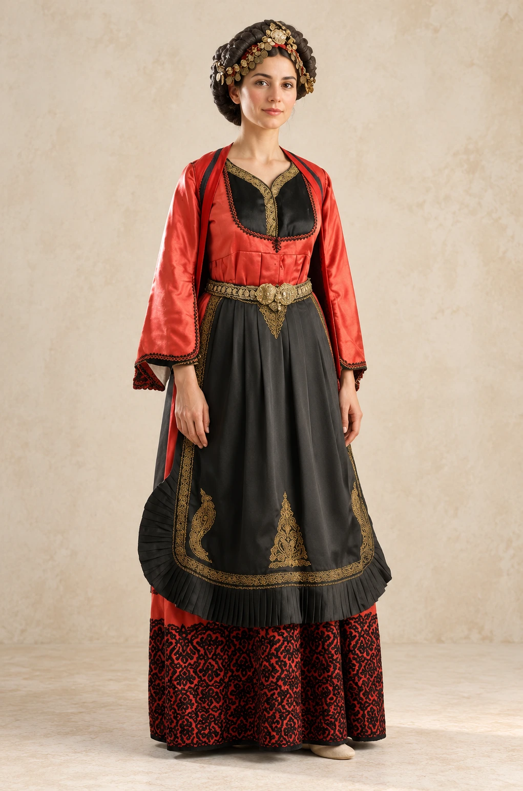
01 / ΜέτσοβοΓιορτινή γυναικεία φορεσιά
Το Εθνικό Αρχείο Μνημείων καταγράφει σύνολο με σεγκούνα, πισλί, φόρεμα, ποδιά και κεφαλομάντηλο, μαζί με ζώνη και κοσμήματα.
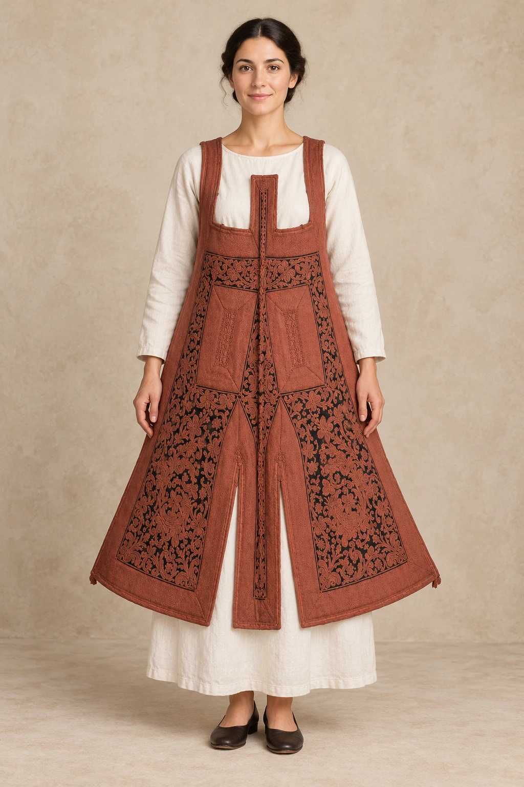
02 / ΖαγόριΤο σιγκούνι του Ζαγορίου
Το σιγκούνι του 20ού αιώνα παρουσιάζεται φορεμένο, με έμφαση στη μορφή και στη διακόσμησή του.
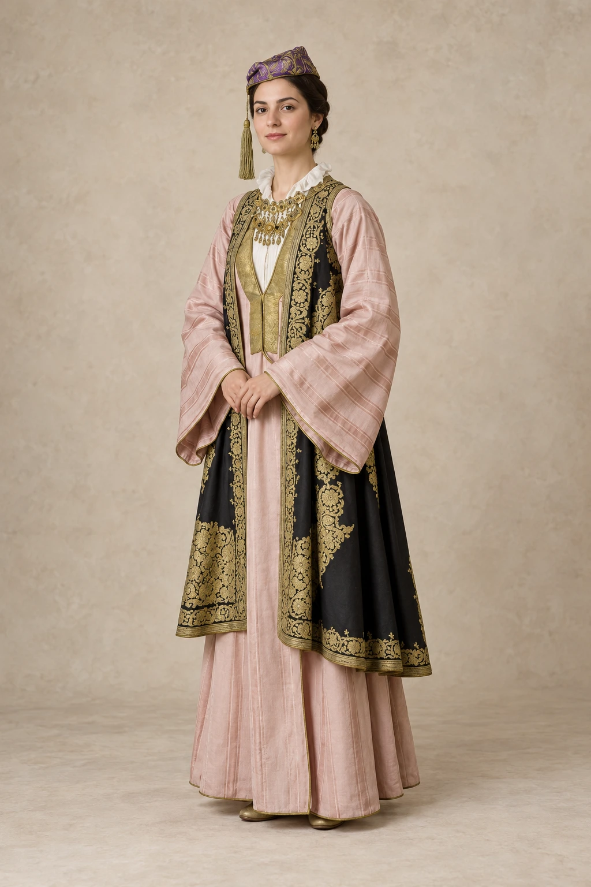
03 / ΙωάννιναΑστική ενδυμασία των Ιωαννίνων
Η αστική γυναικεία φορεσιά του 19ού αιώνα, με μακρύ φόρεμα και πλούσια διακοσμημένο επενδύτη.
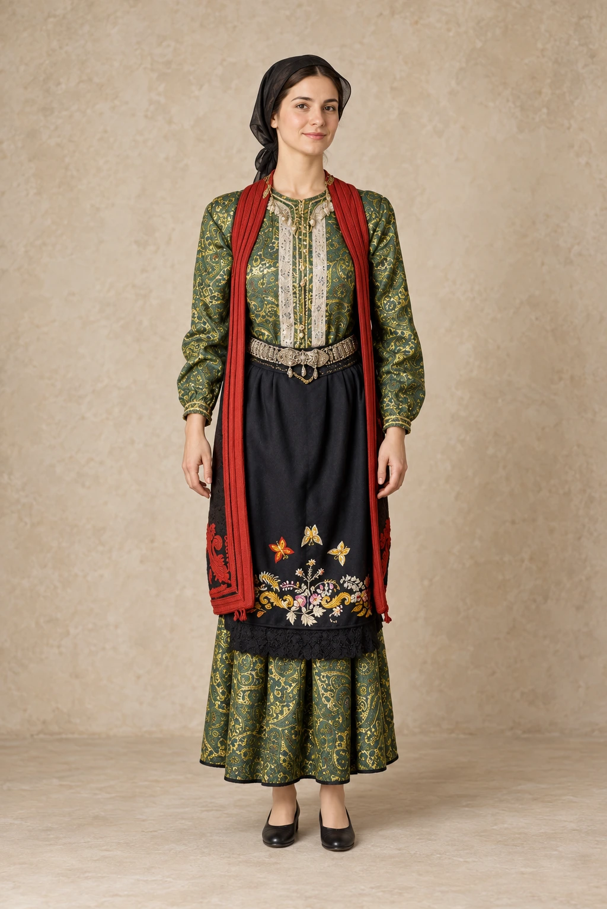
04 / ΚόνιτσαΜια γαμήλια φορεσιά από την Κόνιτσα
Η γαμήλια φορεσιά του 20ού αιώνα μέσα από ένα συγκεκριμένο μουσειακό σύνολο.
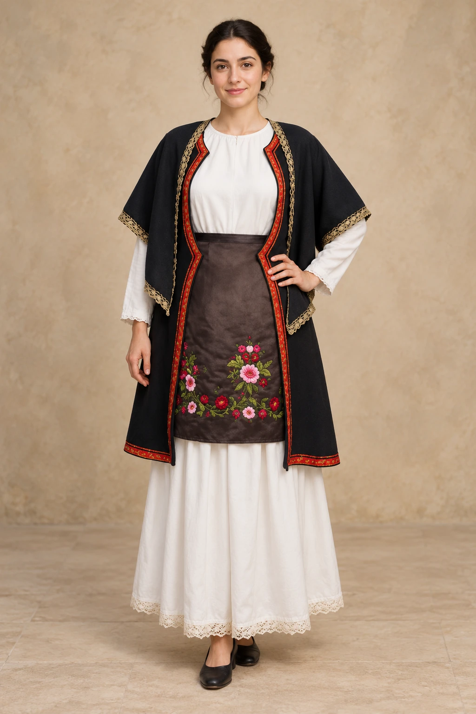
05 / ΠωγώνιΜια γυναικεία φορεσιά του Πωγωνίου
Μια καταγεγραμμένη γυναικεία ενδυμασία, με λευκό φόρεμα, σκούρο επενδύτη και κεντημένη ποδιά.
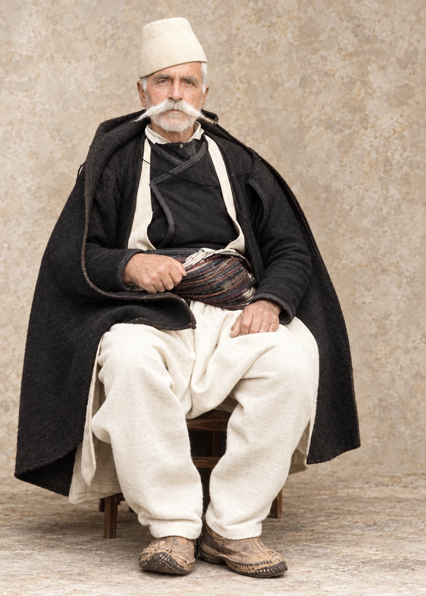
06 / ΣυρράκοΑνδρική ενδυμασία του Συρράκου
Η ανδρική φορεσιά μέσα από ιστορικό πορτρέτο των αρχών του 20ού αιώνα και νέα αναπαράσταση.
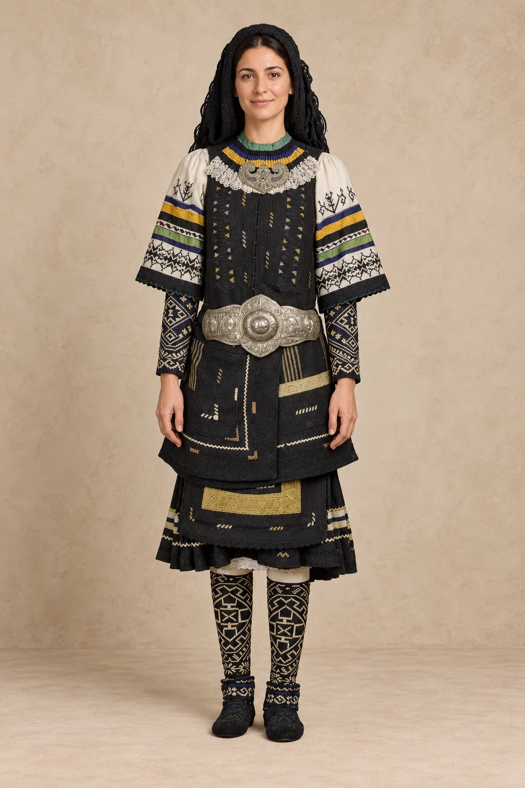
07 / ΣαρακατσάνοιΗ σαρακατσάνικη γυναικεία φορεσιά
Σκούρα υφάσματα, φωτεινές ταινίες διακόσμησης και μεταλλική ζώνη σε ένα γυναικείο σύνολο.
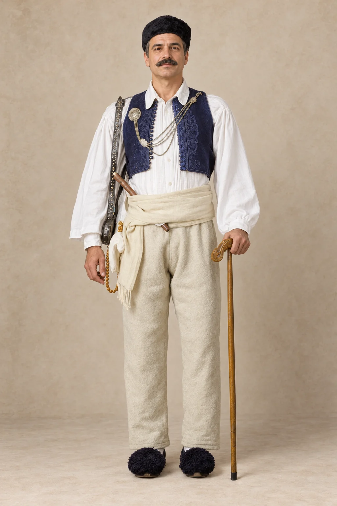
08 / ΉπειροςΗ ανδρική φορεσιά ενός χωρικού
Το λευκό πουκάμισο, το σκούρο γιλέκο και το ανοιχτόχρωμο ζωνάρι σε ανδρική ενδυμασία του 20ού αιώνα.
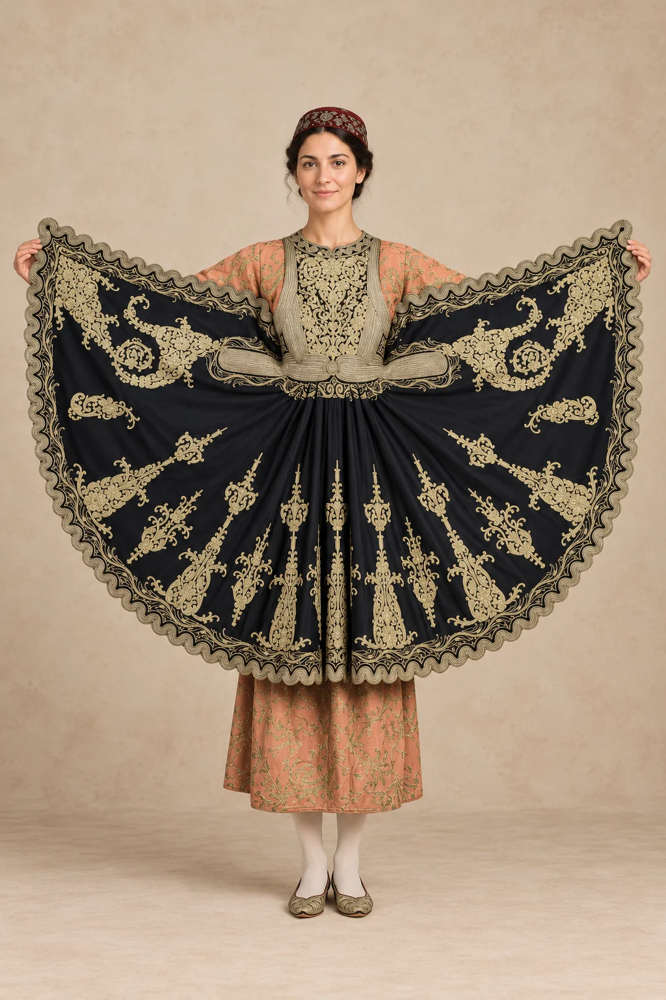
09 / ΙωάννιναΤο χρυσοκέντητο πιρπιρί
Το χρυσοκέντητο ένδυμα του 19ου αιώνα παρουσιάζεται ανοιγμένο, ώστε να διακρίνεται ο διάκοσμός του.
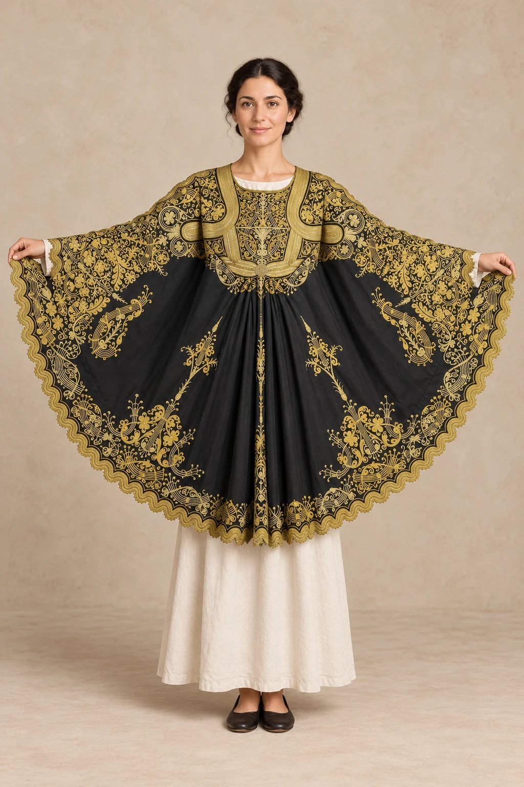
10 / ΙωάννιναΤο γιαννιώτικο πιρπιρί
Ένα δεύτερο πιρπιρί του 19ου αιώνα, σε επίπεδη ανάπτυξη, αποκαλύπτει διαφορετική διάταξη του διάκοσμου.
Στην περιήγηση περιλαμβάνονται πλέον και τα επτά ενδυματολογικά εκθέματα με ξεχωριστή λεζάντα στη σελίδα του Μουσείου Αλή Πασά, μαζί με τις συμπληρωματικές παρουσιάσεις του Μετσόβου, του Πωγωνίου και του Συρράκου. Οι εικόνες από χορευτικές αναπαραστάσεις ή οι εικόνες που δημιουργούνται με AI δεν χρησιμοποιούνται ως ιστορικά τεκμήρια τοπικής φορεσιάς.
Ένα ένδυμα χρειάζεται την ιστορία του
Μια φορεσιά μπορεί να συγκινεί με το χρώμα και τη λεπτομέρειά της. Για να τη γνωρίσουμε όμως, χρειάζεται να ρωτήσουμε από πού προέρχεται, ποιος τη φορούσε και σε ποια περίσταση. Οι ονομασίες μιας περιοχής δεν αρκούν για να περιγράψουν όλες τις διαφορές χρόνου, ηλικίας και χρήσης. Οι εικόνες των τοπικών ενδυμασιών που προηγούνται προσφέρουν αφετηρίες για αυτή την αναζήτηση.
Στις συλλογές του Λαογραφικού Μουσείου των Ιωαννίνων περιλαμβάνονται ενδυμασίες από διαφορετικές περιοχές της Ηπείρου, καθώς και υφαντά, κεντήματα και κοσμήματα. Η εξέτασή τους μαζί βοηθά να δούμε το ένδυμα ως σύνολο και ως μέρος της καθημερινής και κοινωνικής ζωής.[1]
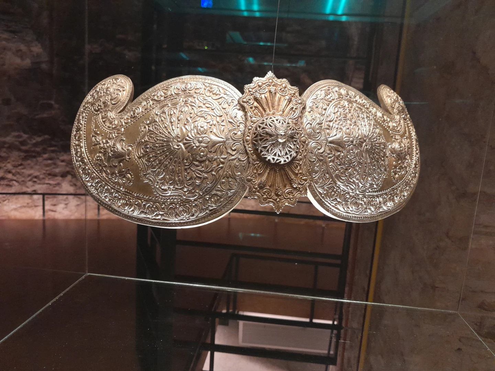
Από το νήμα στην επιφάνεια
Στο Μονοδένδρι, η δράση του Ριζάρειου Χειροτεχνικού Κέντρου κρατά ενεργή την υφαντική ως γνώση και εργασία.[2] Η σχέση με τον αργαλειό μας θυμίζει ότι το ύφασμα έχει τη δική του κατασκευαστική ιστορία, πριν ακόμη χρησιμοποιηθεί σε ένδυμα ή στο σπίτι.
Η ύφανση δημιουργεί την επιφάνεια του υφάσματος, ενώ η κεντητική προσθέτει διάκοσμο επάνω της. Αυτή η βασική διάκριση βοηθά στην παρατήρηση: πού βρίσκεται το μοτίβο, πώς αλλάζει η υφή, ποια σημεία παρουσιάζουν φθορά; Η προσεκτική ματιά μπορεί να μας φέρει πιο κοντά στην εργασία χωρίς να χρειάζεται να αποδώσουμε αυθαίρετα σε κάθε σχέδιο ένα συγκεκριμένο σύμβολο.
Το κόσμημα συνομιλεί με τη φορεσιά
Οι πόρπες και τα υπόλοιπα εξαρτήματα ενδυμάτων δείχνουν πώς η μεταλλοτεχνία συναντά την ενδυμασία. Σε έκθεση του ΠΙΟΠ για το κόσμημα παρουσιάστηκαν έργα του 19ου και του 20ού αιώνα από την Ήπειρο, αναδεικνύοντας τη σχέση της διακόσμησης με την κοινωνική ταυτότητα.[3]
Μια πόρπη δεν χρειάζεται να αποκοπεί από τη φορεσιά για να τη θαυμάσουμε. Μπορούμε να αναζητήσουμε τη θέση της πάνω στο σώμα, τη σχέση της με το ύφασμα και τη λειτουργία της. Η συνολική εικόνα αποκτά έτσι μεγαλύτερο βάθος από την απλή απαρίθμηση επιμέρους στολιδιών.
Όταν ένα ρούχο περνά στην επόμενη γενιά
Ένα οικογενειακό ένδυμα έχει και μια ιστορία μεταβίβασης. Ποιος το φύλαξε; Έγιναν μεταποιήσεις; Υπάρχει φωτογραφία του ανθρώπου που το φορούσε; Οι απαντήσεις αξίζει να παραμένουν μαζί με το αντικείμενο, ακόμη κι όταν είναι ατελείς.
Η φροντίδα της μνήμης περιλαμβάνει και την παραδοχή όσων δεν γνωρίζουμε. Μια αβέβαιη χρονολογία είναι προτιμότερο να καταγράφεται ως αβέβαιη. Έτσι ο επόμενος άνθρωπος που θα κρατήσει τη φορεσιά θα παραλάβει τόσο την ομορφιά της όσο και μια έντιμη αφήγηση για τη διαδρομή της.
Ένα μικρό λεξιλόγιο της φορεσιάς
- Πουκάμισο
- Βασικό ένδυμα που μπορεί να κατασκευάζεται από βαμβακερό, λινό ή μεταξωτό ύφασμα. Τα ορατά τμήματα συχνά διακοσμούνται με ύφανση ή κέντημα.
- Επενδύτης
- Εξωτερικό ένδυμα με μπροστινό άνοιγμα. Ονόματα όπως σιγκούνι, καβάδι και αντερί παραπέμπουν σε διαφορετικές μορφές και τοπικές χρήσεις.
- Τερζής και γαϊτάνι
- Ο ειδικευμένος ράφτης αναλαμβάνει την κατασκευή και τη διακόσμηση. Το γαϊτάνι είναι κορδόνι που στερεώνεται στο ύφασμα σχηματίζοντας σχέδια.
- Ποδιά
- Η καθημερινή ποδιά προστατεύει το ένδυμα, ενώ η γιορτινή αποκτά ιδιαίτερη διακοσμητική σημασία. Το σχέδιο και η τεχνική της μπορούν να βοηθήσουν στη μελέτη τοπικών διαφορών.
Η ενδυμασία επηρεάζεται από το κλίμα, τα διαθέσιμα υλικά, την οικονομική δυνατότητα και την περίσταση. Δεν αρκεί ένα μεμονωμένο μοτίβο για να αποδώσουμε με βεβαιότητα προέλευση ή συμβολισμό.
Πηγές και περαιτέρω ανάγνωση
- Εταιρεία Ηπειρωτικών Μελετών · Λαογραφικό Μουσείο Κώστας Φρόντζος
- Ριζάρειος · Ο αργαλειός και η υφαντική στο Μονοδένδρι
- ΠΙΟΠ · Οι αμέτρητες όψεις του Ωραίου, 2018
Συμπληρωματικές πηγές των τοπικών καταγραφών
- Ηπειρωτικός Σύνδεσμος Πειραιώς — Παραδοσιακές Φορεσιές
- Μουσείο Αλή Πασά — Παραδοσιακές ηπειρώτικες φορεσιές
- Εθνικό Αρχείο Μνημείων μέσω SearchCulture — Γυναικεία γιορτινή φορεσιά Μετσόβου
- Δήμος Μάνδρας–Ειδυλλίας — Μια γυναικεία φορεσιά του Πωγωνίου
- Λαογραφικός Σύλλογος Βλάχων Βέροιας / Δημόσια Κεντρική Βιβλιοθήκη Βέροιας, Μέδουσα — Ανδρική ενδυμασία του Συρράκου